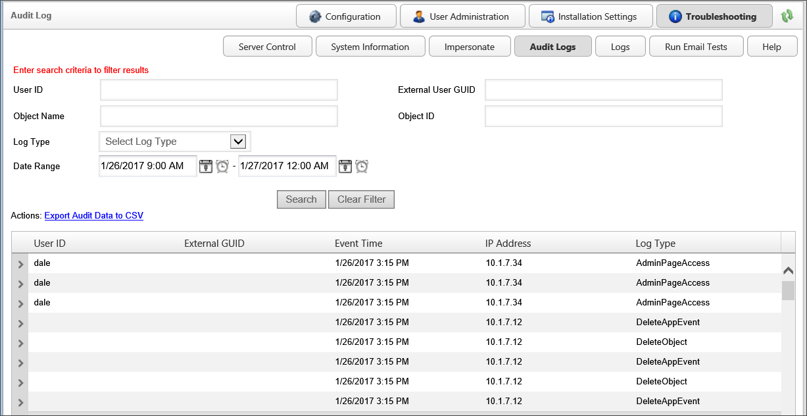

In addition to storage in the file system, users of the Compliance edition—which includes cloud-based installations—can have audit logs written into the Process Director internal database for easier access to the logs to view, search, and export audit logs. This functionality is available from within the Troubleshooting section of the IT Admin area via the Audit Logs button.

The top portion of the Audit Logs page provides search fields to find the relevant portions of the log files stored in the database. Below the search fields is a link to export the search data to a CSV file. Exporting the data to CSV format enables users to open the exported data in Excel for further analysis, providing a much easier way to analyze audit logs than the text-based log files. The bottom portion of the screen displays the returned records from the database. Each returned row has an expansion icon () that users can click to expand the row to show log file details for that entry.
If you allow outside users who don't have Process Director user accounts, such as customers or suppliers, to have access to your processes via anonymous access, you can enable audit logging for anonymous users as well. To turn this feature on, you'll need to set the fAuditLogFileOnly variable to "false" in the Custom Variables file. You can limit the number of days log files are stored by setting the nAuditLogDays Custom Variable, to keep the audit table at a manageable size, as it grows quickly.